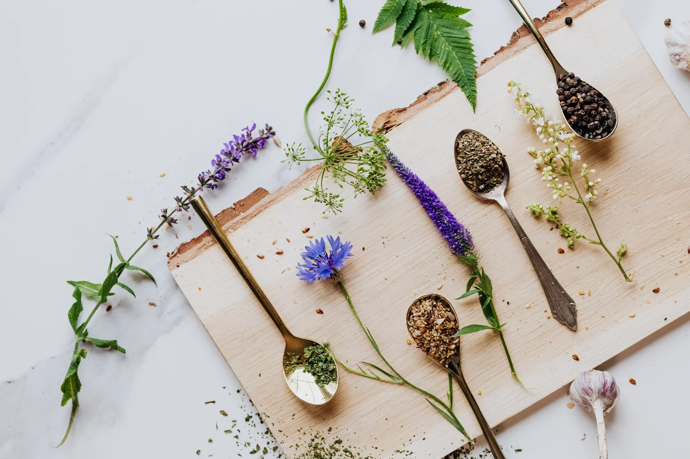
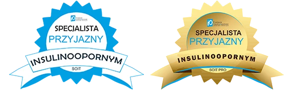
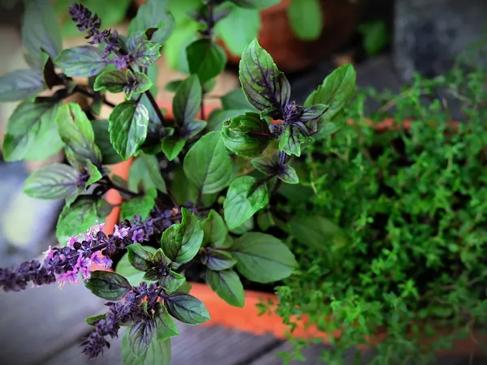
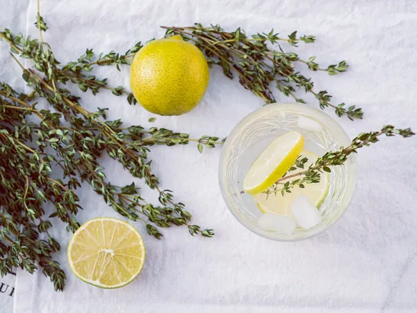
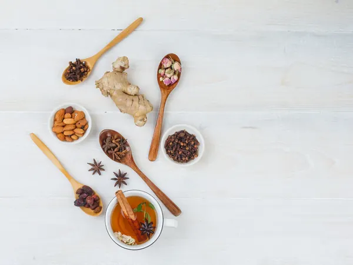

W poradni w Wołominie
Spotkanie na żywo w spokojnej atmosferze, przy ziołowej herbacie, z analizą masy i składu ciała. Poradnia Przestrzeń Dobrostanu, os. Słoneczna 4, kilka minut od stacji PKP Wołomin Słoneczna.
Umów przez Booksy
Pomagam kobietom ułożyć jedzenie, wyciszyć stres i wrócić do równowagi - z ziołami, spokojną rozmową i terapiami, które dają chwilę dla siebie. W poradni Przestrzeń Dobrostanu w Wołominie i online.
Nie chodzi tylko o to, co jesz, ale także o to, jakie emocje i przekonania są związane z Twoimi wyborami żywieniowymi.
Przychodzą do mnie najczęściej kobiety zmęczone i zestresowane, które nie potrafią poukładać sobie jedzenia. Dlatego konsultację prowadzę w duchu psychodietetycznym: bez presji, rygoru i oceniania, we własnym tempie. Patrzę na zdrowie całościowo - łączę naturopatię i zielarstwo z dietetyką klasyczną i dietetyką Tradycyjnej Medycyny Chińskiej, bo w mojej głowie te elementy od dawna tworzą jedną całość.
Jelita, insulinooporność, tarczyca, jedzenie emocjonalne, brak energii albo kilogramy, które wracają. Każda konsultacja to szczegółowy wywiad, spokojna rozmowa i plan, który da się wprowadzić w codzienne życie.
Spotkanie na żywo w spokojnej atmosferze, przy ziołowej herbacie, z analizą masy i składu ciała. Poradnia Przestrzeń Dobrostanu, os. Słoneczna 4, kilka minut od stacji PKP Wołomin Słoneczna.
Umów przez BooksyWideorozmowa, telefon i kontakt mailowy - wygodnie dla osób z całej Polski, w elastycznych godzinach. Zalecenia i wsparcie dostajesz przez cały okres zmiany.
Umów przez Booksy
Od lat jestem zrzeszona w Fundacji Insulinooporności i mam złotą odznakę specjalisty przyjaznego pacjentom insulinoopornym. Pomogę dostosować dietę i pokonać bariery psychologiczne, które stoją na drodze.
Nie zlecam badań na zapas. Najpierw rozmawiamy, a jeśli trzeba poznać przyczynę zmęczenia, problemów z jelitami czy wagi, dobieram badanie do Twojej sytuacji. Na podstawie wyników przygotowuję plan żywienia, zioła i suplementację.
Aktualny koszt badań laboratoryjnych podaję przy zleceniu - ceny laboratoriów często się zmieniają.
Kobietom, które pracują ze mną nad dietą, najczęściej brakuje spowolnienia i rozluźnienia. Dlatego terapie uzupełniają konsultacje - pomagają odpocząć, wyciszyć układ nerwowy i poczuć się zaopiekowaną. Można przyjść także tylko na terapię.
sesja 1,5 godziny
Delikatny dotyk 32 punktów na głowie. Pomaga rozładować napięcie i stres, wspiera głęboki relaks i lepszy sen - dla dorosłych, dzieci i seniorów.
55 minut
Metoda Tradycyjnej Medycyny Chińskiej: ogrzewanie wybranych punktów ciała tlącą się bylicą. Rozluźnia napięcia, rozgrzewa i głęboko relaksuje.
bańka ogniowa 45 minut - 150 zł, masaż pleców bańką szklaną 1,5 godziny - 220 zł
Jedna z najstarszych metod TCM: pobudza krążenie i rozprasza zastoje. Masaż bańką szklaną rozluźnia spięte plecy i przywraca lekkość.
1,5 godziny, z elementami chińskich technik masażu
Japoński masaż twarzy połączony z technikami chińskiego masażu. Rozluźnia napięte mięśnie twarzy, poprawia ukrwienie i koloryt skóry, a przy okazji wycisza głowę.
1,5 godziny, z aromaterapią
Spokojny masaż całego ciała z olejkami eterycznymi. Dla kobiet, które potrzebują po prostu zatrzymać się, odetchnąć i odpocząć od codziennego biegu.
Z natury jestem raczej opiekunką niż ekspertką zza biurka - choć bez solidnej wiedzy nie da się robić tego, co robię. Najpierw tylko dla siebie odkryłam, jak wielki wpływ na samopoczucie i zdrowie ma to, co jemy, a potem przyszły zioła, naturopatia i praca z emocjami.
To, co polecam, sprawdzam najpierw na sobie. Codziennie praktykuję jogę, kocham być w naturze, a wiosną i latem zbieram i przetwarzam zioła - na własny użytek i na herbatki, którymi częstuję kobiety w poradni. Rozumiem, jak trudno zmienić nawyki w zabieganym życiu, dlatego wspieram na każdym etapie tej zmiany.
W poradni na os. Słonecznej 4 pracuję razem z psychologiem i terapeutką. Nie uważam, że wiem wszystko - tematami, w których nie jestem kompetentna, się nie zajmuję, tylko kieruję do koleżanek. Do nich możesz umówić się także stąd.
psycholog
Psychoterapia, psychologia kryzysu i wsparcie seniorów. Pomaga przy bezsenności, lękach, depresji, stresie pourazowym i dolegliwościach psychosomatycznych. Przyjmuje dorosłych i dzieci, w poradni i online.
Kalendarz Pani Dorotyterapia czaszkowo-krzyżowa
Delikatna terapia manualna, która pomaga rozluźnić napięcia w ciele i wyciszyć układ nerwowy. Pełny opis, zdjęcie i link do zapisów uzupełnię, gdy dostanę materiały.
Zapytaj o terminKrótkie, praktyczne wpisy o tym, z czym najczęściej przychodzą do mnie kobiety. Pomagają też nowym osobom z okolic Wołomina trafić na stronę z Google.

Trzy pierwsze kroki, które możesz zrobić jeszcze przed wizytą.

Jak napięcie i sen wpływają na poziom cukru i apetyt.

Zioła na jesienne wieczory, trawienie i spokojny sen.
Przykładowe tematy - pierwsze wpisy przygotujemy razem ze stroną, a kolejne będą dochodzić regularnie.
Nie. Do każdej osoby podchodzę indywidualnie - przed ułożeniem planu żywieniowego zbieram szeroki wywiad żywieniowy i zdrowotny, a stan zdrowia, wiek i płeć wpływają na dobór składników i rozkład posiłków.
Około 3 godziny przed badaniem nie jedz dużych posiłków, nie pij płynów i nie ćwicz intensywnie. Do pomiaru przystąp z pustym pęcherzem, boso i bez kremu na stopach.
Pracujemy nie tylko nad jadłospisem, ale przede wszystkim nad nawykami, a po redukcji stopniowo rozszerzamy dietę. Zdrowy styl życia zostaje z Tobą na stałe.
Tak - w planie są też słodkie przekąski z nieprzetworzonych składników. Jeśli Twoją słabością są słodycze czy wino, szukamy rozsądnego kompromisu między zachciankami a prawdziwym głodem.
Tak, obejmuje ten sam wywiad, rozmowę i zalecenia. Spotykamy się przez wideorozmowę lub telefon, a materiały i plan dostajesz mailem.
Zadzwoń, napisz albo zarezerwuj termin przez Booksy. Jeśli masz pytania przed pierwszą wizytą - chętnie odpowiem.